Thinkphp 5.0.x SQL注入-select方法
漏洞概述
官方不认为是漏洞，因在特定模式 exp 下执行 SQL 语句，未经任何过滤处理导致注入
影响版本
ThinkPHP5 全版本
需要开启 Debug 页面
环境搭建
拉取项目
1 | composer create-project --prefer-dist topthink/think=5.0.10 thinkphp_5.0.10 |
修改 composer.json 文件的 require 字段设置成如下，然后再执行 composer update
1 | "require": { |
修改 application/index/controller/Index.php 文件内容
1 |
|
创建 users 表
1 | create database tpdemo; |
根据相关内容修改 database.php 文件
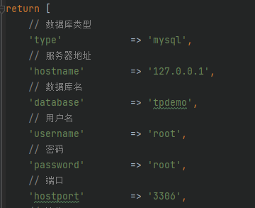
在 config.php 文件中开启 app_debug 和 app_app_trace
漏洞复现
1 | http://127.0.0.1/thinkphp/public/index.php/index/index/index?username=)%20union%20select%20updatexml(1,concat(0x7e,user(),0x7e),1)%23 |
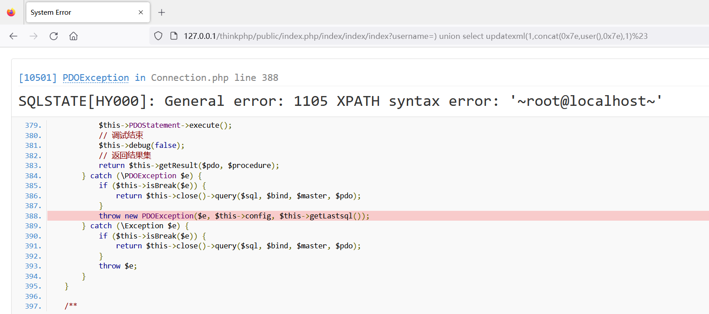
漏洞分析
打断点开始调试，首先进入 get() 方法，在 thinkphp/library/think/Request.php 中
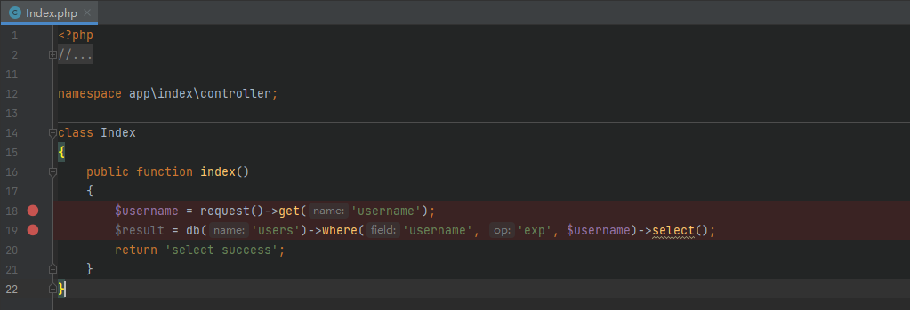
get() 方法中对传入的 $name 进行判断，如果是数组则在第 673 行处合并后输出，进入 input() 方法
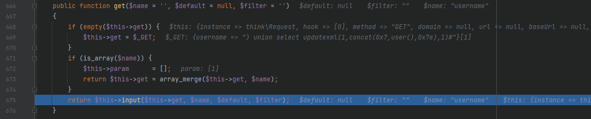
input() 方法对参数 $name 分为 / 和 . 两种情况进行处理
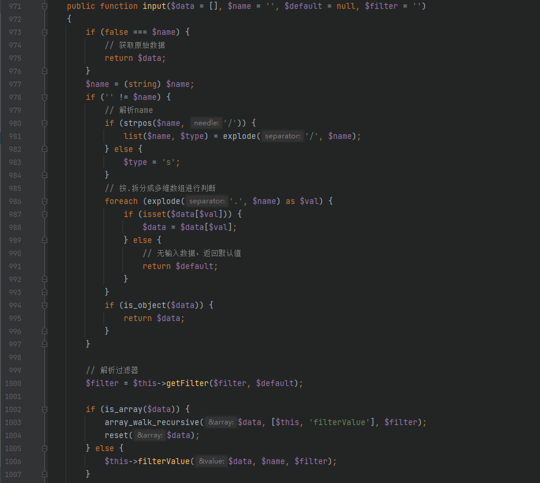
当判断参数 $data 不是数组时，进入 filterValue() 方法
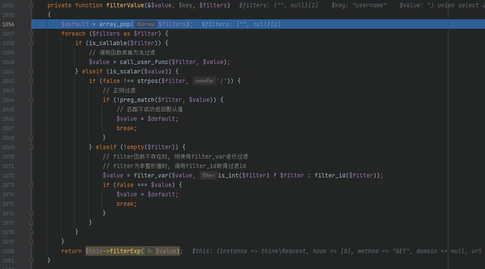
继续跟进，进入 filterExp() 方法
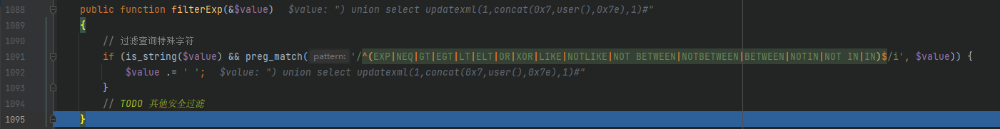
使用正则过滤查询关键字，然后在参数 $value 后加上空格，最后再返回数据回到 application/index/controller/Index.php 文件中
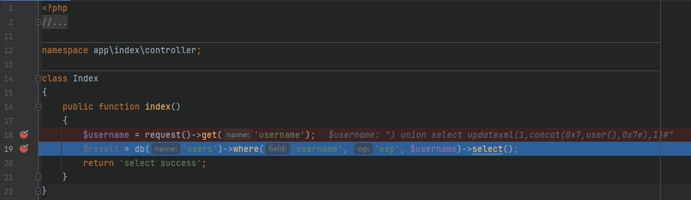
先进入 where() 方法，在 thinkphp/library/think/db/Query.php 中
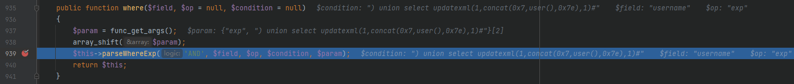
where 部分经过 parseWhereExp() 方法处理后返回，继续调用 select() 方法
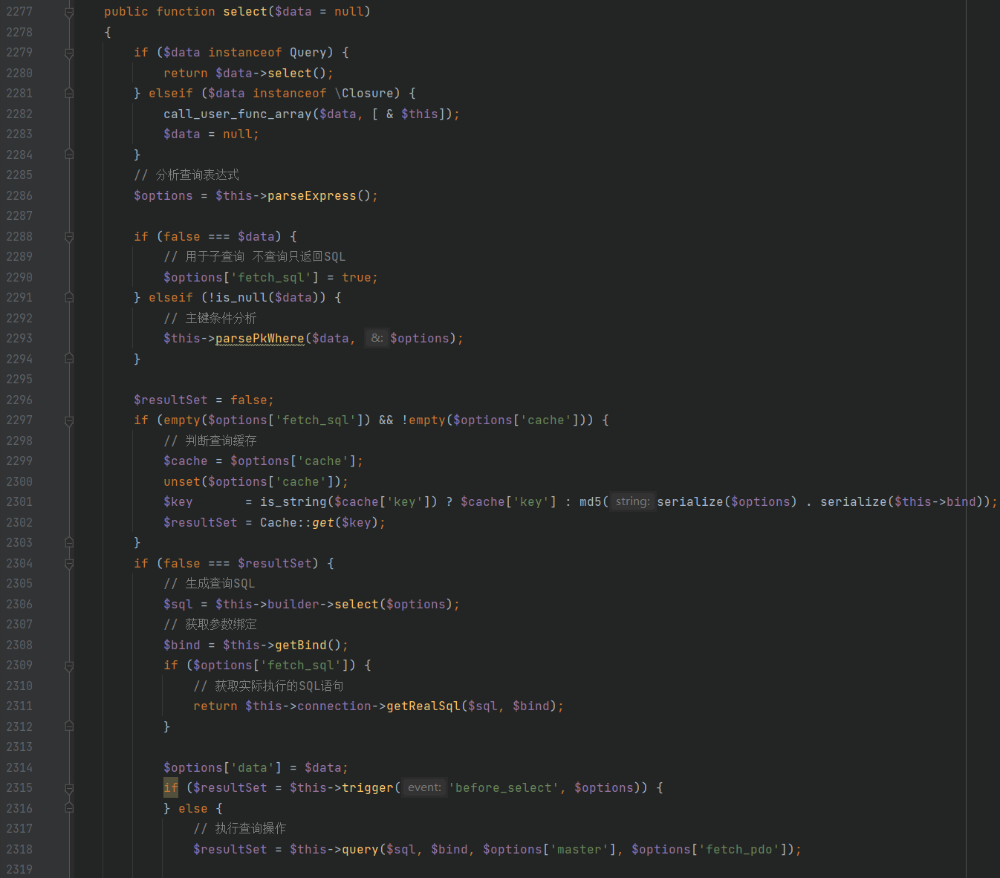
在 select() 方法中，重点在第 2306 行处生成 SQL 查询语句， $options 参数的生成在第 2286 行，通过 parseExpress() 函数分析表达式获取到表名信息、where 查询后的内容
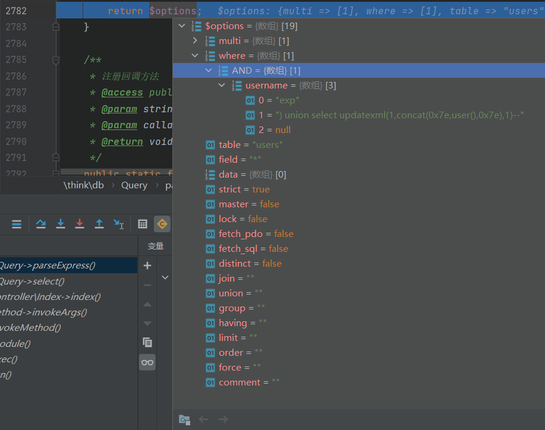
继续跟进 ，调用 BUilder 类中 select() 方法，文件在 thinkphp/library/think/db/Builder.php
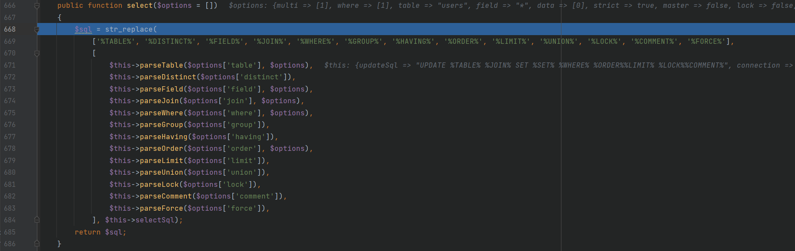
在 select() 方法中，程序会对 SQL 语句模板用变量填充，其中用来填充 %WHERE% 的变量中存在用户输入的数据，跟进 parseWhere() 方法
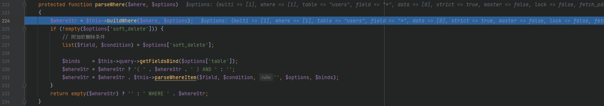
使用 buildWhere() 方法生成查询条件 SQL 语句，继续跟进该方法
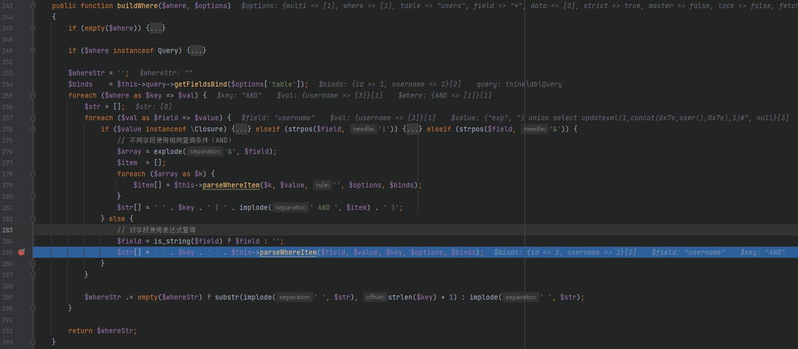
跟进 parseWhereItem() 方法查看 where子单元分析

当操作符为 exp 时，会将来自用户的数据直接拼接进为 SQL 语句，导致产生 SQL注入漏洞，所以此时的语句为
1 | ( `username` ) union select updatexml(1,concat(0x7e,user(),0x7e),1)# ) |
回到 Builder 类中的 select() 方法，组合成完整的 SQL 语句
1 | SELECT * FROM `users` WHERE ( `username` ) union select updatexml(1,concat(0x7e,user(),0x7e),1)# ) |
最后返回到 Query 类中 select() 方法调用 query() 执行查询
Thinkphp 5.0.10 SQL注入-select方法
漏洞概述
漏洞存在于 Mysql 类的 parseWhereItem 方法中，由于程序没有对数据进行很好的过滤，直接将数据拼接进 SQL 语句。Request 类的 filterExp 方法漏过滤 NOT LIKE 关键字，最终导致 SQL注入漏洞 的产生。该注入影响小于 5.0.10 版本，高版本已经将 NOT LIKE 添加到 filterExp() 方法中进行过滤。
影响版本
- ThinkPHP <= 5.0.10
环境搭建
拉取项目
1 | composer create-project --prefer-dist topthink/think=5.0.10 thinkphp_5.0.10 |
修改 composer.json 文件的 require 字段设置成如下，然后再执行 composer update
1 | "require": { |
修改 application/index/controller/Index.php 文件内容
1 |
|
创建 users 表
1 | create database tpdemo; |
根据相关内容修改 database.php 文件
漏洞复现
1 | http://127.0.0.1/thinkphp/public/index.php/index/index/index?username[0]=not%20like&username[1][0]=%%&username[1][1]=aa&username[2]=)%20union%20select%201,user()%23 |
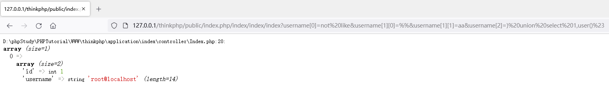
漏洞分析
打断点开始调试，先进入到 thinkphp/library/think/Request.php 中的 get() 方法中
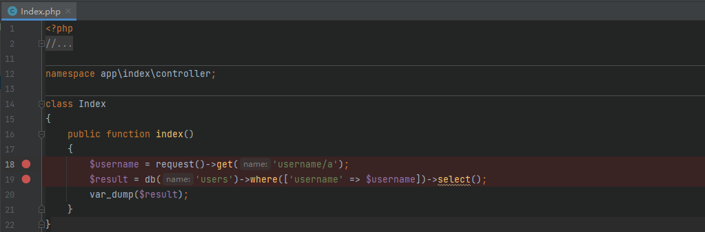
判断 $name 参数类型，继续进入 input() 方法中
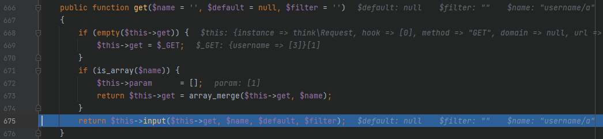
在 input() 方法中，因为这次是数组数据，判断 $data 类型后进入 if 语句中
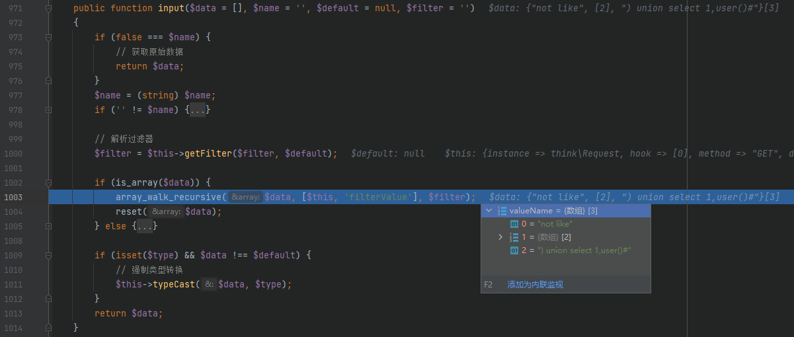
使用 array_walk_recursive() 函数对 $data 中内容进行过滤，进入 filterValue() 方法
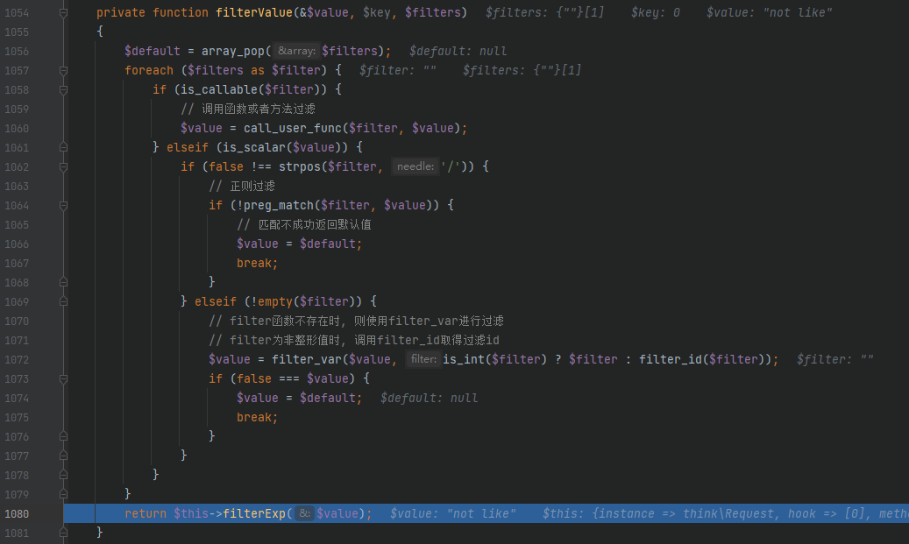
继续进入 filterExp() 中，查看有哪些过滤字符
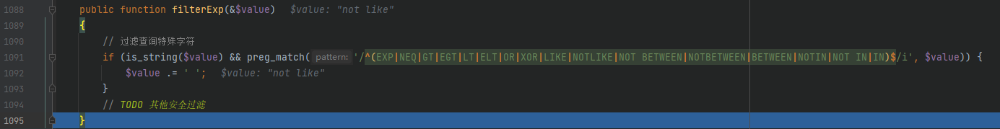
使用正则过滤，有对 NOTLIKE 进行过滤，但是忽略了 NOT LIKE ，回到 application/index/controller/Index.php 文件
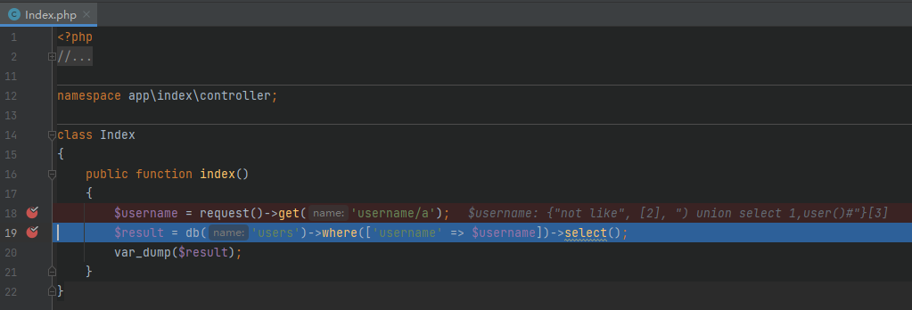
先调用 Query 类中的 where() 方法，然后通过 parseWhereExp() 分析查询表达式
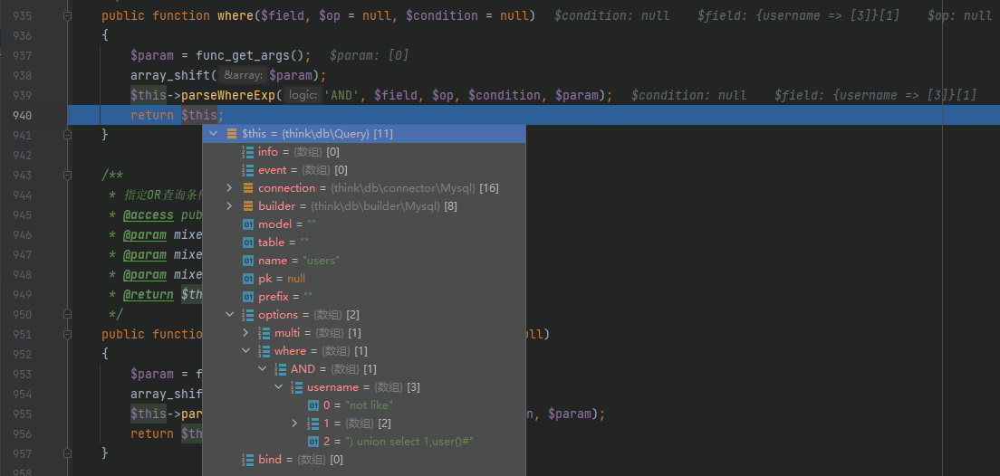
最后返回 index.php 并继续调用 select() 方法构建 SQL 语句
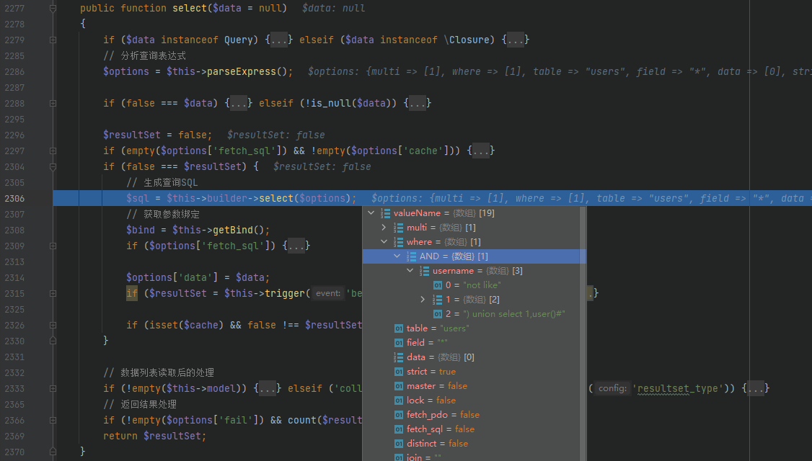
继续跟进 ，调用 BUilder 类中 select() 方法，文件在 thinkphp/library/think/db/Builder.php
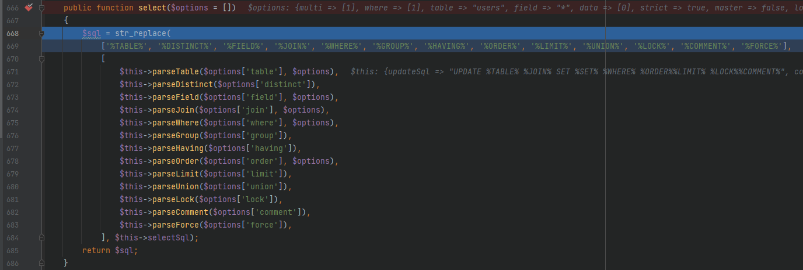
在 select() 方法中，程序会对 SQL 语句模板用变量填充，其中用来填充 %WHERE% 的变量存在用户输入的数据，跟进 parseWhere() 方法
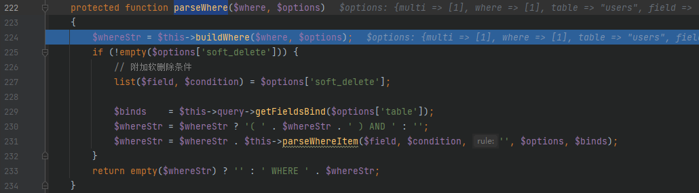
数据传入 buildWhere() 方法，继续跟进，生成查询表达式 SQL 语句
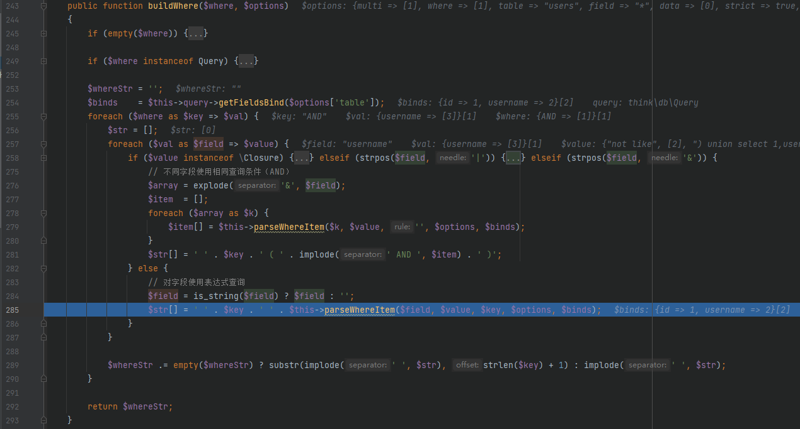
跟进 parseWhereItem() 方法，对 where子单元分析
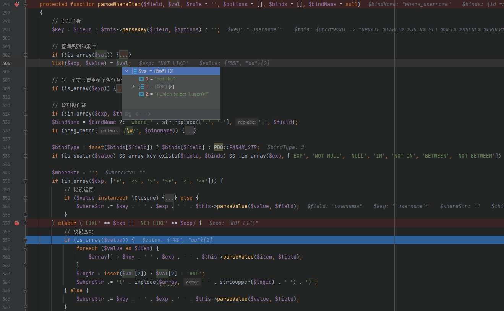
第 305 行使用 list() 获取 $val 中的值，分别赋值给 $exp = $val[0] = NOT LIKE 和 $value = $val[1] = array('%%', 'aa') ，当程序走到第 357 行判断 $exp 的值是否为 NOT LIKE 。由于在 Request 类中的 filterExp() 方法忽略掉对 NOT LIKE 的过滤，导致用户输入的内容可控，进入该 elseif() 分支中
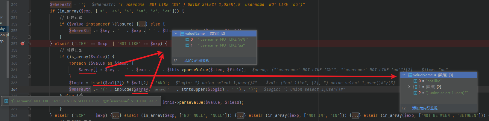
$value 为数组，进入 if 分支，在第 363 行判断是否存在 $val[2] ，如果存在则赋值给 $logic ，即
1 | $logic = ") union select 1,user()#" |
然后在 364 行处使用 implode() 将 $array 和 $logic 组合为字符串返回给 $whereStr
1 | $whereStr = "(`username` NOT LIKE '%%' ) UNION SELECT 1,USER()# `username` NOT LIKE 'aa')" |
最终 Builder 类中 select() 方法生成的完整查询 SQL 语句为
1 | $sql = "SELECT * FROM `users` WHERE (`username` NOT LIKE '%%' ) UNION SELECT 1,USER()# `username` NOT LIKE 'aa') " |
最后返回到 Query 类中 select() 方法调用 query() 执行查询
补充说明
拉取 ThinkPHP 5.0.9 版本，复现该漏洞，漏洞仍存在
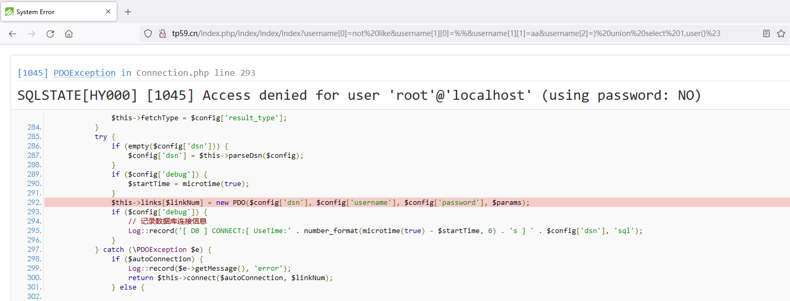
在 thinkphp/library/think/db/Builder.php#324 处使用 in_array() 函数判断 exp 数组中是否存在 not like
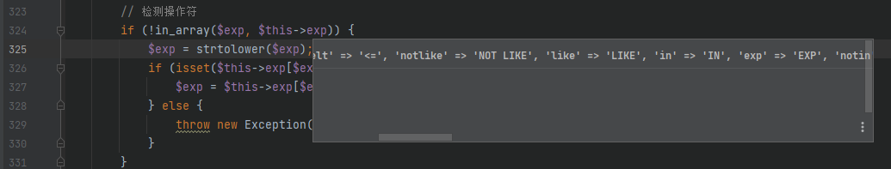
实际上$exp 是检查数组的值而不是键名
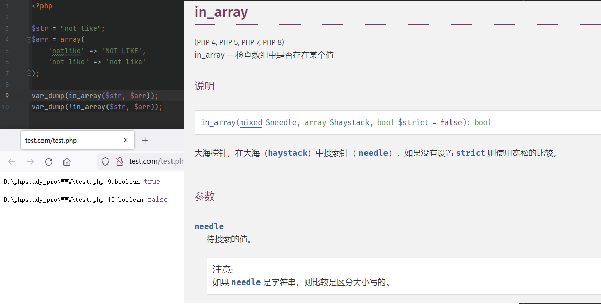
所以小于 5.0.10 版本同样存在漏洞